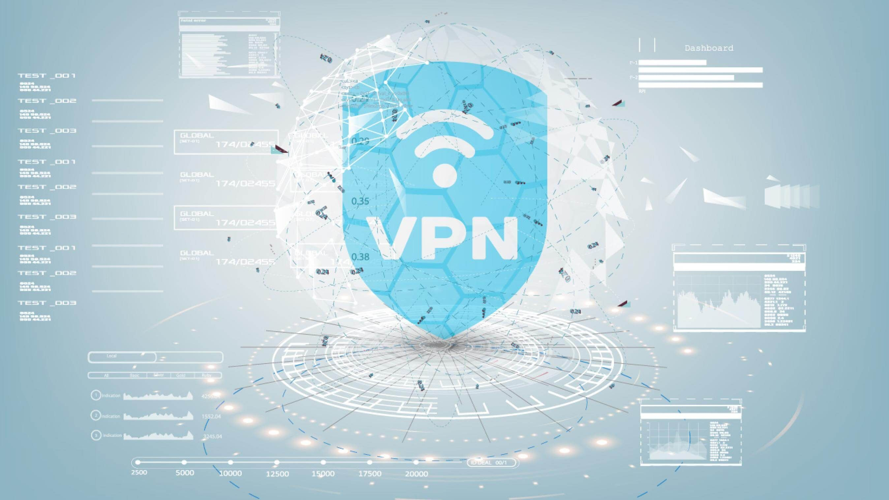

How we review the best VPN Software

Buying the best VPN software for your needs is important.
Therefore, we want to be 100% transparent about
how we test and review and which methods we used to select the best VPN programs for 2020.
We use 5 different factors to create an overall score and decide on which VPN software makes it into our top 10 list. All of these 5 factors play a role, but not all are equally important.
Therefore, the weight on the end result varies according to the factors we tested.
Here are the 5 main factors, and their relative weight in our testing process:
1. Security: Most important, with a weight of 35%. We chose VPNs that have military-grade encryption, a range of protocols (OpenVPN, L2TP, IKEv2, and more), DNS leak protection, and a kill-switch.
2. Number of servers and locations: This is vital so that you can surf fast from anywhere anonymously. We gave this factor a weight of 25% in our overall score.
3. Additional features and device compatibility: This includes features like a no-log policy, apps for PC, Mac, iOS and android, split tunneling and more. We gave this factor a weight of 20% in our overall score.
4. Value for money: Mostly, as with everything in life, you get what you pay for. Most VPN software is priced similarly so we gave this factor a weight of 10%.
5. User reviews: While important, these can often be misleading as we all handle and understand technology differently. We gave this a weight of 10% on our overall score.
To decide on a score for additional features, device compatibility and value for money we analysed the offers of all the different VPN providers that we tested. This information is best taken directly from the source.
The information for user reviews come from TrustPilot, the Google Play Store and our own user reviews.
As for price our primary concern is flexibility and value. Services that only offer a single, expensive plan aren't a great option. We're living in the age of à la carte services, where most consumers are accustomed to monthly fees. Moreover, if your VPN stops working with Netflix or providing adequate speeds, it would be crummy to have paid a lot for a year's worth of access.
The average monthly fee for the top 10 VPNs we've reviewed is, as of this writing, around $9.80. Many come in below that figure, and a few go above. The ones that cost more, obviously, have to justify their hefty price tags.
Value is a bit trickier, but we believe that a single VPN subscription should meet certain criteria. It needs to include coverage for at least five simultaneous devices, which is the average for the industry. It needs to work on multiple platforms, including mobile devices. And a single subscription needs to work for different platforms—that is, paying for a subscription for your Mac should also get you iPhone VPN functionality. If VPN forces you to jump through hoops and pay extra to secure all the different devices in your home, it's not a good value.


 4.3 out of 5
4.3 out of 5